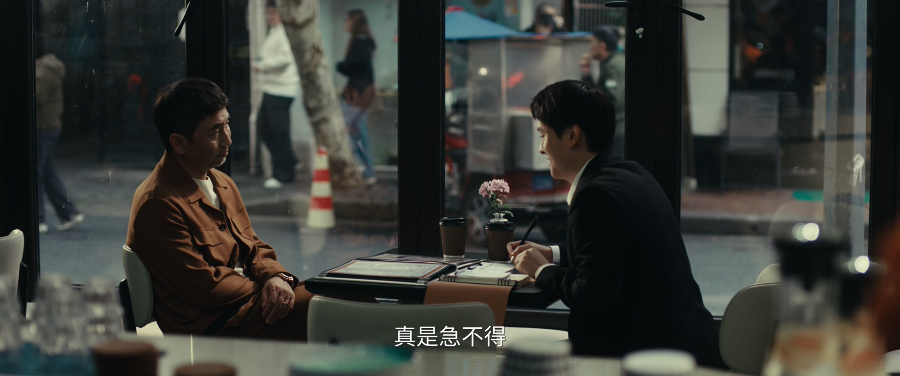
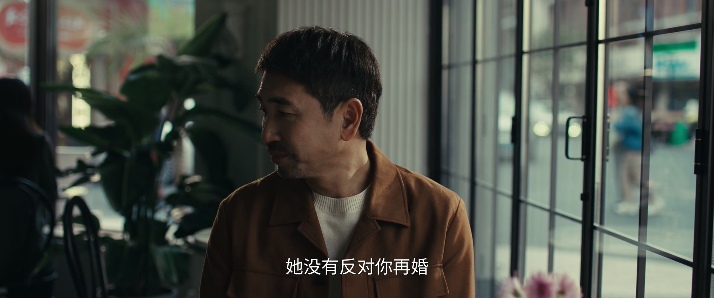
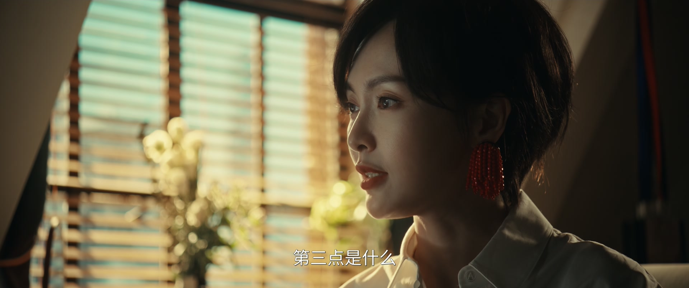
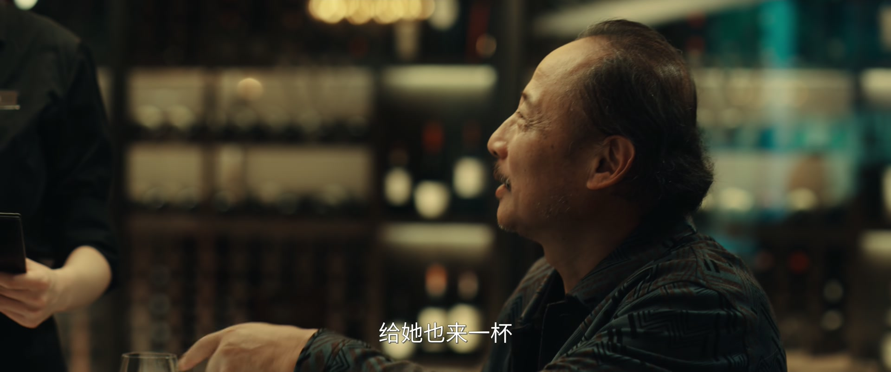
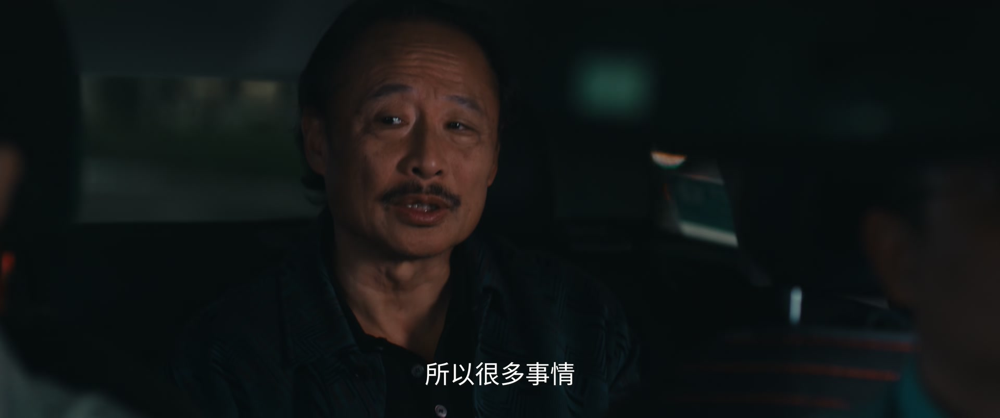
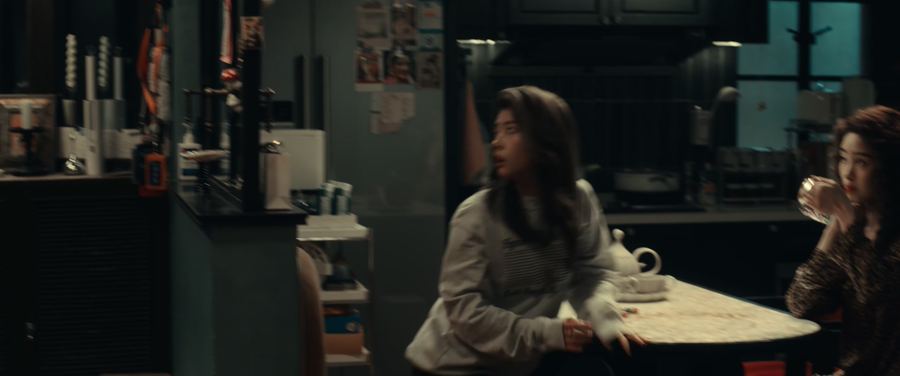

拒绝，也是一种教养
情境：掌珠的父亲第三次结婚，还托展翘劝掌珠出席，被展翘当众顶了回去。
遇到这种情况，可以这样做
- 该有的礼数要有，但被强制的配合不是礼数。
- 成年子女有权对父母的安排说不，那不代表不孝。
- 真正的尊重，是允许对方有自己的生活。

Drama Recap · 剧情图文总结
第 11 集 · 山雨欲来
掌珠的父亲又再婚，婚礼请柬第三次递到女儿面前；展翘一边相亲一边被创业危机追着跑——投资人质疑、五个新作者被对手平台一口气挖走，内鬼疑云笼罩公司；合伙人卖房为公司筹钱，何韩则把展翘带回了自己长大的老房子，重提「黄金搭档」。
一场风暴正在公司上空集结。展翘刚靠「三原则」筛出五个新人作者，投资人志愿却忽然质疑融资计划虚报；更糟的是，五个互不相识、身处不同城市的作者在同一时间被另一家平台全部挖走——公司有内鬼。合伙人卖掉房子为公司筹钱，何韩则把展翘带回他长大的老房子，重提「以前有林展翘和何韩」。
第 11 集，危机四伏。 展翘在婚庆店偶遇掌珠的父亲蔡总——他又在筹备结婚。蔡总请展翘劝掌珠出席婚礼，被展翘一句顶回去：「该有的礼数教养都得有，但不包括一次次被强行要求参加父亲的婚礼。」蔡总恼羞成怒：「我尊重她，她尊重我吗？」
剧里的鸡毛蒜皮，往往是人生的缩影。这些情节不只是故事——当你在现实中遇到同样的处境时，它们能提醒你：先做什么、别做什么、怎么说才有效。
情境：掌珠的父亲第三次结婚，还托展翘劝掌珠出席，被展翘当众顶了回去。
情境：蔡总提醒展翘：仓促的相亲只会让她更怀念上一段感情。
情境：展翘用「三原则」筛出新作者：态度认真、头几章出人物、人物有缺点。
情境：五个互不相识、身处不同城市的作者被同一时间挖走，等于宣告公司有内鬼。
情境：何韩父亲把当年的暴力说成「生活体验」，被展翘一句「你差点要了他的命」戳穿。
情境：何韩把展翘带回长大的老房子，重提「我需要我和你成为业界的骄傲」。

展翘在婚庆店撞见掌珠的父亲蔡总——他正为再婚筹备婚礼，催着店员报价。蔡总顺口托展翘劝掌珠出席，被展翘顶回去：「甭管多大，该有的礼数教养都得有，但不包括一次次被强行要求参加父亲的婚礼。」蔡总恼了：「我尊重她，她尊重我吗？」
展翘的相亲对象（蔡总的朋友）恰好赶到，两人约好周三再见。蔡总看那人戴着相亲网站的手环，事后提醒展翘：「那个配不上你。上一段感情一定是下一段感情的垫脚石，但刚才那样，只会让你更怀念上一段感情。」又为自己刚才的冲动道了歉。
关键台词 · KEY QUOTES
展翘把蔡总的盘算转述给掌珠。掌珠冷笑：「工地上的事再多，也多不过她女人那些事。你以为只有这位钱小姐一个人的婚礼要忙吗？她上一任、上上任，全都要管。」
展翘试着说「你爸其实对你还不错」，掌珠回敬：「是吗？对别的女人，一样不错。」「我已经参加过两次婚礼了，这是我的极限。她要是再结婚，我都不会去。」
关键台词 · KEY QUOTES

老板把展翘筛出的五个新作者挨个看过，评价「还真是不错」，让她讲讲筛选的原则。展翘伸出手指：「第一，最重要的是做这件事的态度跟认真；第二，头几章就得出现你的人物，不能搞那种虚头巴脑的设定；第三，人物得有缺点，不能太完美。」
展翘举例子：「他能接受一堆垃圾里头只有一点点金子，但不能接受一堆金子里面有一点点杂质。」老板问她谁教的，展翘老实说：「我全是你以前那些批注稿里自己悟出来的。」老板满意地拍板：融资的钱一到，这几位一起签下来，全归她管。
关键台词 · KEY QUOTES
投资方志愿发来消息：「怀疑你们发展作者计划虚报，要再研判一下。」展翘等不到下班，直奔志愿解释：「我确实打算大部分作者的定金都拿志愿投的钱来支付，这在融资报告里写得非常清楚。」对方松口：「一般这种情况，都是有人举报。」
展翘回公司，三人分头给新人作者打电话——结果五个作者里有三个已经被别家签走。「他们五个人之间根本就不认识，而且根本不在同一座城市，却同时被联系上。你知道这些作者的信息是要保密的吗？」展翘低声说：「你们公司有内鬼。」
关键台词 · KEY QUOTES
办公室要换了。合伙人把办公桌搬到展翘隔壁：「之前那间离你太远，这间就在你隔壁，方便一点。」展翘却注意到另一件事：「你把房子给卖了？」对方满不在乎：「我说了我能至少找来七百万，我不是开玩笑的。」
展翘正色：「你说这是我们的公司，我希望你也不是开玩笑。」合伙人答：「放心，钱我和花子都认上。」又补了一句：「下班之后，去我新租的房子吃饭吧——创业期间没什么钱租不到好房子，但我觉得你可能会喜欢的。」
关键台词 · KEY QUOTES

何韩陪父亲蔡德璋吃饭。父亲宣布：「我搬到杨老院去了。你以后要是有机会的话，最好每个月来看我一次。」何韩让他少喝点，父亲耍赖：「不好消化没关系的，多喝点酒不就消化了？」
买单时父亲举手：「你点的你买单吗？我帮你买单，我帮你买单——以后到了杨老院里就吃不到了。」嘴上没正经，句句却都在说：这一顿饭，是我这个当爸的请儿子的。
关键台词 · KEY QUOTES
何韩的父亲约展翘喝酒，替儿子抱不平：「他跟你这一分手，立刻又找了一个。以前找的年纪都不比你小，现在倒好，又找了个大的。」展翘陪着他一杯接一杯。
戴珊找过来，被何韩父亲拉去酒吧：「我把他那个成长故事讲给你听。」戴珊问真的假的，老头吹牛不打草稿：「不完全是。我像是知道何韩为什么会写小说了——虽然是我编的，但总得有个圆嘛。不管怎么编，混蛋就是混蛋，这点如假包换。」
关键台词 · KEY QUOTES
何韩把展翘带回他长大的老房子。「这点钱在哪里都租不上好房子，还不如租回有点意义的。」展翘问这里有什么意义，何韩答：「你长大的地方。」奶奶仍住在这里——眼睛不好了，东西都得放在固定位置，晚上还不许开灯。
何韩说出憋了很久的话：「我需要我和你，成为业界的骄傲。以前有林展翘和何韩，以后有赵兰心和凌奕凯。你从澎湖区一路摸爬滚打，重点中学、重点大学，现在又开了自己的公司——你这么努力，不就是为了被别人看到吗？我们是一样的呀。」
关键台词 · KEY QUOTES

展翘请何韩的父亲吃牛排。老头喝高了，拍着桌子：「何韩现在文章写得好、钱这么多，他得谢谢我。吃得苦中苦，方为人上人——我给了他生活体验。蜜罐里泡大的孩子，懂得什么酸甜苦辣？」
展翘忍无可忍：「你有没有想过，他宁可不要这么多钱，换你少给他那些痛苦体验？」老头继续狡辩：「他擦我酒瓶子，我打他活该的。他不小心摔在碎玻璃渣子上，不是我及时送医，他眼睛就瞎了！」展翘盯着他：「可是你差点要了他的命啊。」
关键台词 · KEY QUOTES

公司里，有人摊牌：「志愿停了对陈晴的出资，那我们的新作者呢？你以为我让你去找期盼是为什么？先下手为强，都付出去了——五个。」
展翘这边则查到：作者们是被「文坦意义」用更高价挖走的，「应该是给了比我们还要多的钱」。有人冷眼分析：「志愿给林展翘的钱哪儿来的？从我们手里截走的。我们都拿不到，他可以吗？你们公司有内鬼。」展翘摇头：「你要说何韩插在这儿的，我还能信一点。但赵兰心和凌奕凯，不太可能。」——风暴才刚刚开始。
关键台词 · KEY QUOTES
在婚庆店顶回蔡总的无理要求，又因相亲被蔡总点醒；用「三原则」筛出五个新作者，却眼睁睁看着他们被对手平台挖走，当场断定「公司有内鬼」。
把展翘带回长大的老房子，说出「我需要我和你成为业界的骄傲」；陪父亲吃散伙饭，又被父亲那段「酒瓶子往事」揭开旧伤。
卖房搬进养老院前与儿子吃散伙饭，把「酒瓶子差点要了儿子命」的往事说得理直气壮，被展翘一句「你差点要了他的命」戳穿。
第三次筹备婚礼，托展翘劝掌珠出席被怼；事后提醒展翘「那个配不上你」，又为自己的冲动道歉。
「我已经参加过两次婚礼了，这是我的极限」——第三次拒绝出席父亲的婚礼。
卖掉房子为公司筹钱，把办公室搬到展翘隔壁，约她下班去新租的房子吃饭。
在酒吧遇上何韩的父亲，被拉着听「何韩八岁那年的事」，真假莫辨。
「该有的礼数教养都得有，但不包括一次次被强行要求参加父亲的婚礼。」展翘一句话，替掌珠挡下第三次「亲情绑架」。
看态度、头几章出人物、人物有缺点——展翘把老编辑的挑稿智慧讲成一套能复用的方法论。
互不相识、身处五座城市的作者被同一时间挖走——「你们公司有内鬼」，悬疑正式拉开。
「我说了我能至少找来七百万，我不是开玩笑的。」为了「我们的公司」，有人押上了全部身家。
「以前有林展翘和何韩，以后有赵兰心和凌奕凯。」何韩把野心与不舍，都摊在长大的老房子里。
酒瓶子往事被翻出，何韩父亲把伤害说成「生活体验」，展翘一句话刺穿所有粉饰。
何韩被怀疑、赵兰心和凌奕凯被排除，嫌疑人指向「满头、不堪一击、老百姓」这些同事——内鬼的身份，牵动公司的生死。
五个作者被高价挖走，有人喊「我最不缺的就是钱了」——这家对手平台背后，站着一个不差钱的人。
合伙人为公司押上房产，这笔「至少七百万」的承诺，会在公司最危难时兑现，还是变成新的裂痕？
展翘与相亲对象约好周三再见——被蔡总说「配不上你」的这段关系，会怎样收场？
「以前有林展翘和何韩。」这句话是说给展翘听的，也是何韩写给自己的——他还没放下，也还没打算放下。